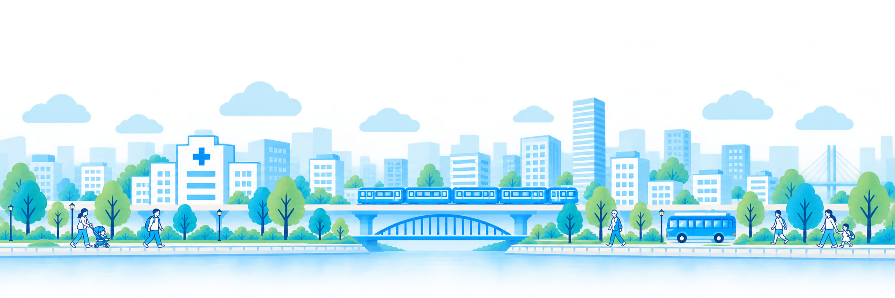

ABOUT CLINIL
ネットやSNSに溢れる医療情報から、
少し離れてみませんか？
地域には、日々、患者さんと向き合いながら
診療を続けている医療機関があります。
そして、その医療機関を頼り、
支えられ、感謝している患者さんもたくさんいます。
けれど今、医療機関を取り巻く環境は
少しずつ複雑になっています。
患者さんとのコミュニケーション。
スタッフの採用。
日々の情報発信。
そして、新しいテクノロジーへの対応。
患者さんのために使いたい時間の外側に、
さまざまな仕事が増えています。
クリニル川崎は、
患者さん、医療従事者、そして医療の現場で働きたい人が、
できるだけ直接つながれる場所をつくります。
私たちは、テクノロジーを
人と人との間に入り込むためではなく、
人と人を、もう一度近づけるために使いたい。
自分に合った医療機関を見つけること。
医療機関のことを、きちんと知ること。
必要なときに、必要な人へ情報が届くこと。
そして、地域で医療を続ける人たちが、
本来の仕事に向き合えること。
患者さんと医療機関が互いを尊重しながら、
一緒に地域の医療を支えていく。
そんな小さな流れを、
ここ川崎からつくっていく。
それが、クリニル川崎の目指す未来です。
本サイトは、問い合わせフォームを備えた地域医療情報サイトです。
掲載情報やお問い合わせ機能の安全性についても、
AIを活用した定期的な点検と改善に取り組んでいます。
2026年 クリニル川崎企画運営部
KAWASAKI MEDICAL SEARCH
川崎の医療を、もっと身近に
各医療機関が編集した情報発信サイト
患者さんはアカウント作成不要かつ完全無料で利用できます。
公認登録した医療機関には問い合わせフォームも利用可能です
（AIによる自動返信含む）。
各医療機関が編集した情報
医療機関が直接、診療内容や
お知らせを更新しています。
問い合わせフォーム
気になることを医療機関へ
直接問い合わせできます。
アカウント不要で利用可能
会員登録なしで、
どなたでもすぐに利用できます。
医療機関の登録・ログイン
初めて登録する医療機関も、登録済みの医療機関も、こちらからお進みください。
※ログイン後、貴院の詳細ページに移動して編集してください。
※編集終了後は必ず編集画面のログアウトボタンを押してください。
※右上のログインボタンに病院マークがある場合は、ログアウトできていない状態です。
登録の流れ
① 登録申請 → ② 運営者が医療機関を確認 → ③ ご案内後にログイン・情報編集
医療機関の皆様へ—登録前に必ずご確認ください
「クリニル川崎」は、各医療機関が自ら情報を発信し、患者からの問い合わせに対応する、地域医療機関向けの情報・問い合わせプラットフォームです。
ご登録にあたり、以下の事項をご確認ください。
1．医療機関ごとに育てるAIについて
本サービスでは、各医療機関が診療科、対応可能な症状、返信用の定型文などを設定します。患者から問い合わせが届いた後、医療機関が登録済み定型文を使用するか、自分で文章を作成して返信するかを選択します。
AIは問い合わせ内容の分類を補助するものであり、送信可否や回答内容を最終決定するものではありません。回答内容の確認および必要な修正は、各医療機関の責任で行ってください。
AIによる回答は診断、治療、処方または緊急性の判断を行うものではありません。
2．将来の有料化について
サービス開始当初は、基本的な登録・掲載機能を無料で提供する予定です。
ただし、登録医療機関数、利用件数および提供機能の増加に伴い、AI分類・返信支援、追加機能、PR掲載、求人掲載などの一部または全部を将来有料化する場合があります。
有料化する場合は、料金、対象機能および開始時期を事前にお知らせし、医療機関の同意なく自動的に有料契約へ移行することはありません。公共性の高いサイトを目指しているため、設定金額は可能な限り低価格（運営維持可能金額）の予定です。
3．登録情報・掲載内容の管理責任
医療機関名、所在地、電話番号、診療科、受付状況、休診情報、ワクチン情報、対応可能な症状、ホームページURLその他の掲載内容は、各医療機関が自ら登録・編集・更新してください。
掲載内容の正確性、適法性および最新性については、登録した医療機関が責任を負うものとします。
掲載内容の誤り、更新漏れまたは不適切な表示によって生じた問題について、本サービス運営者は責任を負いかねます。診療時間や受付状況など、患者の受診行動に影響する情報は、特にこまめな更新をお願いいたします。
4．患者の個人情報の管理
問い合わせに含まれる氏名、メールアドレス、電話番号、患者ID、相談内容その他の個人情報は、問い合わせを受けた医療機関が、個人情報保護法および医療機関内の管理規程に従って適切に管理してください。
問い合わせ情報は、回答および必要な院内対応の目的に限って利用し、本人の同意なく第三者へ提供したり、営業目的など本来の目的以外に利用したりしないでください。
管理画面のログイン情報を第三者と共有せず、退職者のアカウントを放置しないなど、不正アクセスや情報漏えいを防止するために必要な対策を講じてください。
万一、個人情報の漏えい、誤送信、不正アクセスその他の事故が発生した場合は、当該医療機関の責任において必要な対応を行うとともに、速やかに本サービス運営者へ連絡してください。
5．運営サポートについて
本サービスは現在、試験運用・初期運用の段階にあり、当面の間、電話窓口や常時対応のカスタマーサービスは設置しておりません。
操作方法や不具合に関するお問い合わせには、可能な範囲で順次対応しますが、回答までに時間を要する場合や、個別の設定代行・操作代行に対応できない場合があります。
各医療機関には、基本的な登録、編集、返信定型文の設定および問い合わせ管理を自院で行っていただきます。
6．サービス内容の変更・停止
試験運用中は、安全性や利便性の向上のため、予告のうえ機能や利用条件を変更する場合があります。また、保守作業、障害、セキュリティ上の問題その他やむを得ない事情により、サービスの一部または全部を一時停止することがあります。
メールアドレスの確認
メールに届いた8桁の認証コードを入力してください。
登録申請を受け付けました
メール認証が完了し、医療機関の登録申請を受け付けました。
現在、管理者による審査・承認待ちです。
承認後、登録されたメールアドレスにご案内します。
管理者からのメールをお待ちください。
あなたに合った医療機関を探す
診療科や地域から、川崎市の医療機関を検索できます
※「現在地から近い順」で検索する場合は、先に「診療科」と「区」を選択してから、「現在地から近い順」ボタンを押してください。
※掲載情報は変更されている場合があります。受診前に、診療時間・休診日などを各医療機関の公式サイトまたは電話でご確認ください。
患者様専用 お問い合わせ
ご利用・お問い合わせの前に必ずご確認ください
「クリニル川崎」は、川崎市内の医療機関情報を検索し、 「医院登録済み」の医療機関へ問い合わせができるサービスです。
以下の内容をご確認のうえ、ご利用ください。
2．お問い合わせについて
ポリシー違反に該当しないお問い合わせは、医院側へ必ず届く仕組みです。宛先と内容を十分に確認してから送信してください。
お問い合わせは、選択した医療機関へ直接送信されます。回答の有無、 回答内容および回答までの期間は、各医療機関の判断や業務状況によって異なります。
お問い合わせを送信しても、診察予約や受診受付が完了するものではありません。
診断、治療方法、処方、緊急性の判断など、医師の診察が必要な内容には 回答できない場合があります。緊急の場合や症状が急激に悪化している場合は、 本サービスを利用せず、医療機関への電話、救急要請または 公的な救急相談窓口をご利用ください。
3．AIによる分類と医療機関からの返信について
AIは問い合わせ内容を医療機関が確認しやすいよう分類しますが、原則として送信を止めたり、自動的に回答したりしません。
返信は、医療機関が登録済み定型文または個別に入力した文章を確認したうえで送信します。
通知OFF時間や長期休診中も問い合わせは保存されますが、医療機関による確認と返信が遅れる場合があります。
4. 個人情報の取り扱いと自動削除
お問い合わせの際に入力された氏名、メールアドレス、電話番号、患者ID および問い合わせ内容は、選択した医療機関への問い合わせ対応に使用されます。
これらの情報は、30日間保存された後、システムから自動的に削除されます。 一度削除された情報は、原則として復元できません。
ただし、医療機関が回答内容や対応記録を電子カルテその他の院内記録へ 転記した場合、その情報は各医療機関の管理方針および法令に基づいて管理されます。 本サービス上の情報が削除されても、医療機関が別途保存した記録まで 削除されるものではありません。
問い合わせには、必要以上の病歴、検査画像、健康保険証、マイナンバー、 クレジットカード情報その他の重要な個人情報を入力しないでください。
5．医療機関とのトラブルについて
診療内容、治療結果、診療費、予約、受付、待ち時間、接遇、 問い合わせへの回答その他、患者と医療機関との間で生じた問題については、 当事者間で解決していただきます。
本サービス運営者は、医療行為や各医療機関の回答内容を管理・保証する立場にはなく、 患者と医療機関との間の交渉、仲介、調停、補償その他の紛争対応には関与しません。
ただし、本サービスのシステム上の不具合、不正利用または個人情報の取り扱いに 関する問題については、運営者が確認できる範囲で対応します。
6．禁止事項
医療機関または医療従事者への誹謗中傷、脅迫、差別的な表現、虚偽の申告、 営業・勧誘目的の送信、同一内容の繰り返し送信その他、 運営を妨げる行為は禁止します。
不適切な利用が確認された場合は、問い合わせの削除、送信制限 その他必要な措置を行うことがあります。
編集する項目を押すと入力欄が開きます。
🔔 問い合わせ通知先
新しい問い合わせが届いた際の通知先です。 患者様の個人情報や問い合わせ内容は、 通知メールには記載されません。
🔕 通知OFF時間・長期休診
OFF中も問い合わせは保存されます。通知再開後、保留件数をまとめてメールでお知らせします。
🖼️ 医療機関ページ画像
JPEG・PNG・WebP形式、2MB以下の画像を1枚登録できます。 登録時に表示用サイズへ自動圧縮されます。
※選択できる画像は2MB以下です。
📩 患者からの問い合わせ一覧
問い合わせを読み込み中...
医院アカウントの初期設定
メールで届いた8桁の認証コードを入力してください。
認証できました。10文字以上のパスワードを設定してください。
運営管理ログイン
運営管理画面
医療機関からの登録申請
申請内容を確認し、対象医院を選択して承認してください。承認すると医院アカウントの招待メールが送信されます。
申請を読み込み中
クリニック登録・編集

まち・川崎をめざして
貴院の問い合わせ対応に、
AIを活用してみませんか？
貴院の診療内容や特徴、よくある問い合わせを登録することで、
AIが患者さんからの問い合わせ対応をサポートします。
まずは貴院をご登録いただき、スタッフの皆さまで実際の問い合わせを
想定してお試しください。
当面の間、利用料は無料。登録解除もいつでも可能です。
✚ 医療機関として登録する →掲載情報について
診療時間、受付状況、休診情報、対応可能な症状その他の掲載内容は、 原則として各医療機関が登録・更新しています。
最新かつ正確な情報の掲載に努めていますが、内容の完全性や正確性を 保証するものではありません。受診前に、各医療機関の公式ホームページ または電話などで最新情報をご確認ください。
個人情報保護方針
クリニル川崎（以下「本サイト」といいます。）は、 利用者の個人情報を適切に取り扱い、その保護に努めます。
1．個人情報の取得について
本サイトでは、お問い合わせ等のサービス提供に必要な範囲で、 氏名、メールアドレス、お問い合わせ内容その他の情報を取得する場合があります。
2．個人情報の利用目的
取得した情報は、お問い合わせの医療機関への伝達、連絡への対応、 サービスの運営・改善、不正利用の防止のために利用します。
3．第三者への提供
お問い合わせ内容は、送信先として選択された医療機関に提供されます。 法令に基づく場合等を除き、本人の同意なく目的外に第三者へ提供しません。
4．安全管理
個人情報への不正アクセス、漏えい、紛失等を防止するため、 適切な安全管理に努めます。
5．個人情報の管理・削除
取得した情報は、利用目的に必要な期間および法令上必要な期間、 適切に管理します。
6．方針の変更
本方針は、必要に応じて見直し、変更することがあります。
7．お問い合わせ窓口
個人情報の取り扱いに関するお問い合わせは、以下までご連絡ください。
クリニル川崎企画運営部
E-mail：clinics.kikaku.unei@gmail.com
利用規約・免責事項
本サイトは、利用者と医療機関との連絡手段を提供するものであり、 診断、治療、予約の成立、医療機関からの回答を保証するものではありません。
緊急性のある症状や早急な対応が必要な場合は、本フォームを使用せず、 医療機関、救急相談窓口または救急機関へ直接ご連絡ください。
匿名、虚偽情報、営業・勧誘、誹謗中傷、脅迫、 診断や治療方針を求める医療相談等の送信は禁止します。
掲載情報は各医療機関が管理する情報を含みます。 最新情報については、各医療機関の公式ホームページまたは電話で ご確認ください。
医療機関との間で生じた問題については、原則として当事者間で 解決するものとし、本サイト運営者は法律上認められる範囲を超えて 責任を負いません。
お問い合わせ
clinics.kikaku.unei@gmail.comクリニル川崎企画運営部